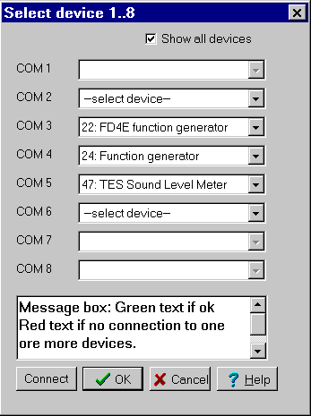
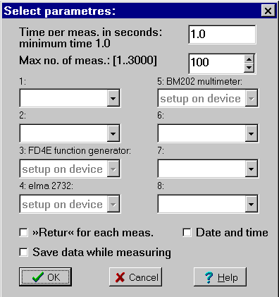

The pc, from which this snapshot has been taken, has 5 available com-ports as shown. You can choose a device on each of these ports. On Connect the connection to the devices is tested. If a problem occurs an error message will be displayed (red text), if a connection can be made the version of the devices will be displayed in green. Press ok.
The actual pc has 2 standard com-ports, using irq 3 and 4 and a pci card with 4 serial ports sharing one irq. The mouse is connected to com-1, and therefore can com-1 not be choosen.
If the connection is OK is the menu inserted in the main menu in Datalyse and you can choose Multitable:

The menu is very similar to the menu for two devices. In this case the devices are:
FD4E function generator: there is no box for selection of parameters, because, as it says, you use the device buttons for setup. Datalyse reads the type of data from the device.
elma 2732 multimeter: there is no box for selection of parameters, because, as it says, you use the device buttons for setup. Datalyse reads the type of data from the device.
BM202 multimeter: there is no box for selection of parameters, because, as it says, you use the device buttons for setup. Datalyse reads the type of data from the device.
When OK has been pressed, the table will show and the button measure has been selected. The measuring begins when you press enter.